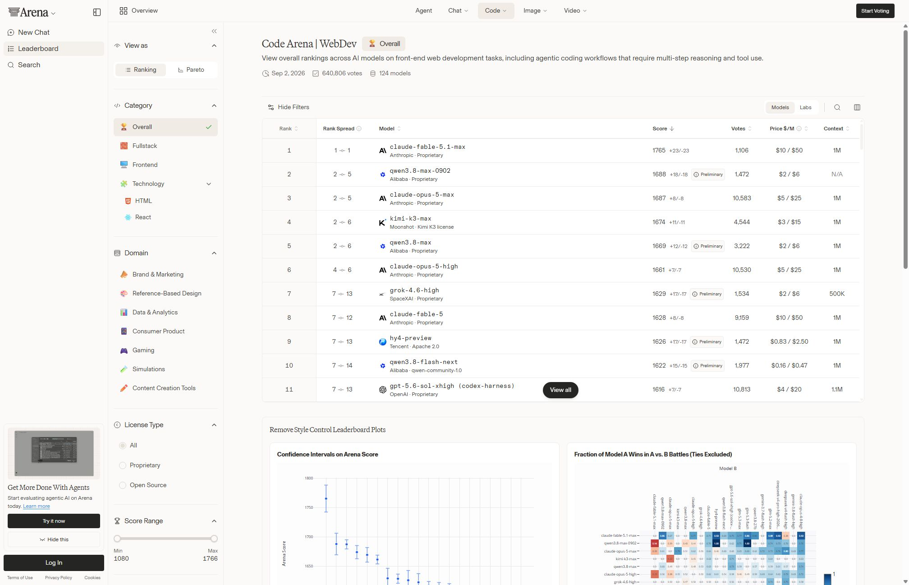
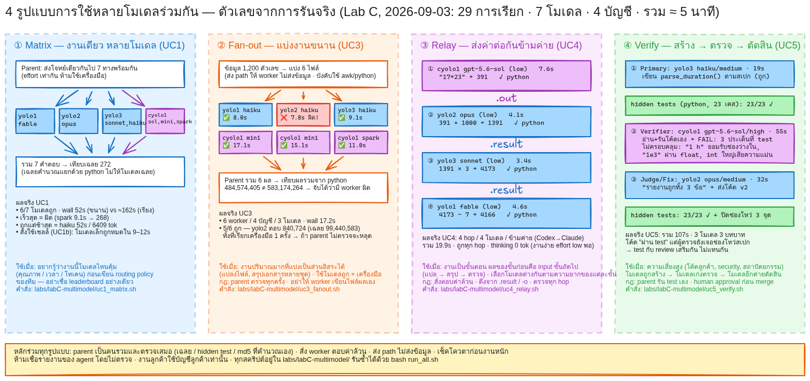
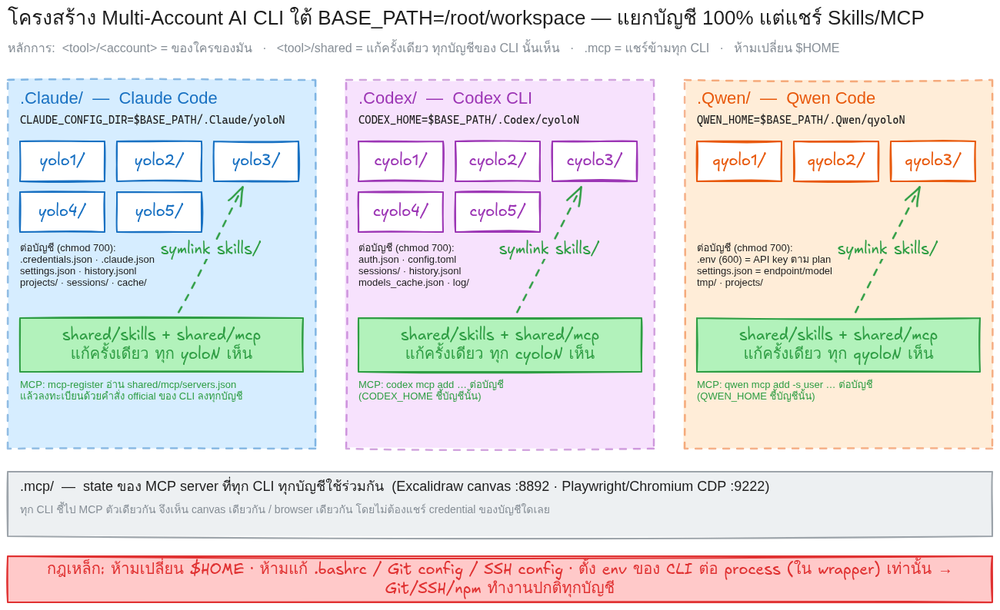
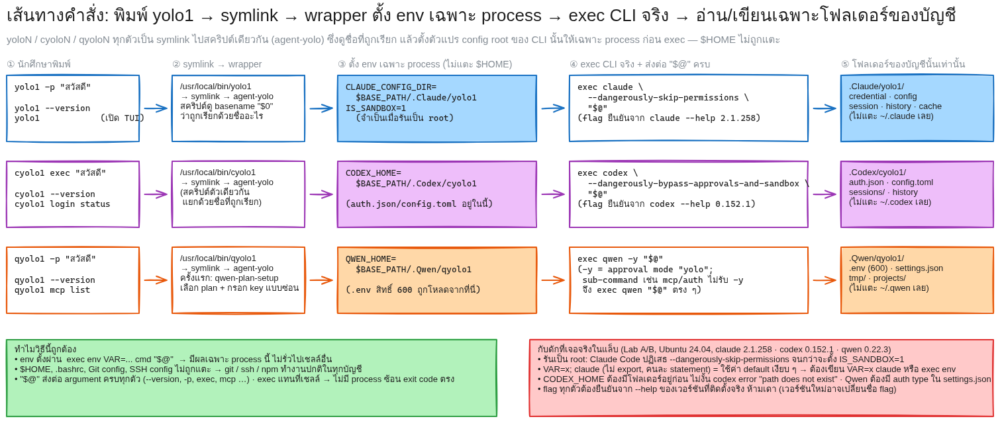

จำแนกงาน
เลือก FRONTEND, ARCHITECTURE, BATCH, CLIENT_CODE, SECURITY, DOCS หรือ GENERAL ให้ตรงกับสิ่งที่จะทำ
Leaderboard บอกว่าแต่ละโมเดลเก่งคนละหมวด ดังนั้นหนึ่งสถานการณ์จึงควรใช้ AI Agent หลายตัว แบ่งงาน กระจายโหลด ตรวจซึ่งกันและกัน และแชร์ความรู้ของโปรเจกต์ โดยไม่แชร์ credential
อ่าน LMArena ให้เป็น: ดูหมวดที่ตรงกับงาน ดูช่วงความไม่แน่นอน ดูราคา และบันทึกวันที่
LMArena แยกอันดับตามประเภทงาน เช่น Text, WebDev, Vision, Document และ Search โมเดลที่นำในหมวดหนึ่งอาจตามหลังในอีกหมวด และคะแนนของกลุ่มบนมักใกล้กันจนช่วงอันดับทับซ้อน จึงไม่ควรตัดสินจากอันดับ Overall เพียงค่าเดียว

เห็นว่าทุกสถานการณ์มี Agent หลัก Agent ตรวจ และวิธีแบ่งงานที่ต่างกัน
yolo1 = Claude Code (เช่น Claude Fable), yolo2 = Claude Code (เช่น Claude Opus), cyolo1 = Codex CLI (เช่น GPT ตระกูล Sol), qyolo1 = Qwen Code รุ่นคุณภาพสูง, qyolo2 = Qwen Code รุ่นเร็ว/ประหยัด ก่อนใช้จริงต้องตรวจชื่อโมเดล ราคา และสิทธิ์ของบัญชีนั้นทุกครั้ง| # | สถานการณ์ | สิ่งที่ให้ความสำคัญ | Agent (ตัวอย่าง wrapper · บทบาท) | แบ่งงานและตรวจอย่างไร |
|---|---|---|---|---|
| 01 | สร้าง Frontend หรือต้นแบบหน้าเว็บ | คุณภาพหมวด WebDev · ความเร็วในการวนแก้ · ราคาต่อรอบ | qyolo1สร้าง cyolo1ตรวจเมื่อขึ้น production | Qwen สร้างต้นแบบเร็วและถูก คนตรวจหน้าจอและ interaction ถ้าเป็น production ให้ Codex ตรวจโค้ดอีกรอบ |
| 02 | วิเคราะห์สถาปัตยกรรมหรือรีวิวงานซับซ้อน | ความถูกต้อง · reasoning · context ยาว | yolo2วิเคราะห์ cyolo1ตรวจยืนยัน | Claude วิเคราะห์ trade-off จากภาพรวม Codex ตรวจสมมติฐานกับโค้ดจริง รวมเฉพาะข้อสรุปที่ทั้งสองฝ่ายตรงกัน |
| 03 | ประมวลผลไฟล์จำนวนมาก (batch) | ราคา · rate limit ต่อบัญชี · automation | qyolo2ประมวลผลหลัก cyolo1สุ่มตรวจ | แบ่งไฟล์เป็นชุด ส่ง path ให้ worker หลายบัญชีทำขนาน Codex สุ่มตรวจตัวอย่าง parent เทียบผลรวมด้วยสคริปต์ |
| 04 | แก้โค้ดในโปรเจกต์ลูกค้า | สิทธิ์บัญชี · privacy · audit trail | cyolo1บัญชีลูกค้าเท่านั้น | ใช้ wrapper ที่ผูกกับบัญชีของลูกค้าเท่านั้น แยก credential จากบัญชีส่วนตัว verifier ตาม policy ลูกค้า คนอนุมัติก่อน merge |
| 05 | สร้าง Backend หรือเชื่อม API | ความถูกต้องของ interface · testability | cyolo1implement + test yolo1ตรวจ contract | Codex เขียน implementation พร้อม test Claude ตรวจ API contract และ error handling เมื่อระบบซับซ้อน |
| 06 | Debug ปัญหาที่หาสาเหตุยาก | หลักฐานจาก log · reproduce ซ้ำได้ | cyolo1reproduce yolo1ท้าทายสมมติฐาน | Codex ทำให้ bug เกิดซ้ำได้ก่อน Claude ตั้งคำถามกับสมมติฐาน สรุปเฉพาะสาเหตุที่พิสูจน์ด้วยการรันจริง |
| 07 | สร้างชุดทดสอบและตรวจ regression | coverage · edge cases · เวลาใน CI | cyolo1เขียนและรัน test qyolo2เสนอ edge cases | Codex เขียนและรัน test จริง Qwen รุ่นประหยัดช่วยไล่ edge cases เพิ่ม รายงานเฉพาะผลที่รันผ่านจริง |
| 08 | สรุปเอกสารหรือ codebase ขนาดใหญ่ | context length · ความครบถ้วน · citation | yolo2อ่านภาพรวม cyolo1ตรวจการอ้างอิง qyolo2จัดรูปแบบ | Claude อ่านทั้งชุดแล้วสรุป Codex ตรวจว่าจุดที่อ้างถึงโค้ดมีจริง Qwen รุ่นประหยัดจัดรูปแบบเอกสารสุดท้าย |
| 09 | ตรวจ Security หรือ configuration สำคัญ | ความเสี่ยงสูง · false positive · human approval | cyolo1ตรวจรอบ 1 yolo2ตรวจรอบ 2 yolo1ตัดสินข้อขัดแย้ง | สอง Agent ต่างค่ายตรวจอิสระ Agent ที่สามตัดสินเฉพาะจุดที่เห็นไม่ตรงกัน คนอนุมัติทุกการแก้ก่อนใช้จริง |
| 10 | Research หรือวิเคราะห์ข้อมูลหลายแหล่ง | ความน่าเชื่อถือ · ความใหม่ของข้อมูล · ต้นทุน | qyolo1รวบรวมและจัดรูป yolo1ตรวจข้อสรุป | Qwen รวบรวมและจัดตารางข้อมูลพร้อมแหล่งที่มา Claude ตรวจข้อสรุปสำคัญและชี้จุดที่หลักฐานไม่พอ |
| 11 | ถอดเสียงประชุมเป็นข้อความ (Speech-to-Text) | ภาษา · ชื่อเฉพาะ · privacy ของเสียง | Voice / External APIถอดเสียง yolo1สรุป cyolo1ตรวจ action items | STT API ถอดเสียง Claude สรุปประเด็น Codex ตรวจว่า action item ทุกข้อมีอยู่ใน transcript จริง |
| 12 | สร้างเสียงบรรยายบทเรียน (Text-to-Speech) | คุณภาพเสียง · ภาษาไทย · ราคาต่อนาที | qyolo2ร่างสคริปต์ yolo1ตรวจภาษา Voice / External APIสังเคราะห์เสียง | Qwen รุ่นประหยัดร่างสคริปต์ Claude หรือผู้สอนตรวจภาษาและความหมาย จึงส่ง TTS API สร้างไฟล์เสียง |
| 13 | สลับ API เมื่อบริการหลักล่มหรือติดโควตา | compatibility · fallback policy · data policy | cyolo1ทำ interface กลาง qyolo2endpoint สำรอง | เขียน adapter กลางให้สลับปลายทางได้ ตรวจว่า backup รองรับ schema และได้รับอนุญาตให้รับข้อมูลชุดนั้นก่อนสลับ |
| 14 | ใช้หลายโมเดลของผู้ให้บริการเดียวกัน | quality tier · latency · โควตาแยกถัง | qyolo1งานยาก qyolo2งานเร็ว/จำนวนมาก | บัญชีเดียวกันค่ายเดียวกันแต่แยก account และ config งานยากไปรุ่นคุณภาพ งานซ้ำ ๆ ไปรุ่นเร็ว แล้วเทียบผลกันเอง |
| 15 | หลาย Agent แชร์ Knowledge แล้วรวมคำตอบ | source of truth · provenance · conflict resolution | yolo1parent รวมผล cyolo1worker qyolo1worker | ทุก Agent อ่าน requirement และ schema จากโฟลเดอร์ knowledge เดียวกัน เขียนผลพร้อมแหล่งที่มา parent รวมและแก้ข้อขัดแย้ง ไม่แชร์ credential |
knowledge/ ส่วน credential, config, session, history และ cache ของแต่ละบัญชียังแยกกัน 100%เข้าใจ 4 กลไก: แบ่งงาน กระจายโหลด ตรวจซึ่งกันและกัน และแชร์ project knowledge โดยไม่แชร์ credential

labs/labC-multimodel/results/summary.md<tool>/sharedมี wrapper ต่อบัญชีที่รันพร้อมกันได้ไม่ชน แชร์ Skills/MCP ได้ และรายงานผลทดสอบตามจริง
นำพรอมป์ด้านล่างจากไฟล์ prompt_multi_account_cli.md ส่งให้ AI coding agent เพื่อสร้างโครงสร้าง บัญชี และ wrapper commands ทั้งหมด พรอมป์กำหนดให้ agent ตรวจ docs และ --help ของเวอร์ชันจริงก่อนทำ และรายงาน PASS / FAIL / SKIP ตามจริง
yolo1..yolo5CLAUDE_CONFIG_DIRcyolo1..cyolo5CODEX_HOMEqyolo1..qyolo3
<tool>/<account> ของใครของมัน · <tool>/shared แก้ครั้งเดียวทุกบัญชีเห็น · .mcp/ แชร์ข้ามทุก CLI
yolo1 → symlink → wrapper ตั้ง env เฉพาะ process → exec CLI จริงพร้อม "$@" → อ่านเขียนเฉพาะโฟลเดอร์ของบัญชีนั้นสร้าง CLI บน Ubuntu สำหรับรัน Claude Code, Codex CLI และ Qwen Code หลาย account
แยก credential/config กัน 100%
## ตัวแปรตั้งค่า (แก้ที่นี่ที่เดียว ที่อื่นต้องอ้างอิงตัวแปรนี้)
BASE_PATH="/root/workspace"
## คำสั่ง
- yolo1..yolo5 → Claude Code + Anthropic account
- cyolo1..cyolo5 → Codex CLI + OpenAI account
- qyolo1..qyolo3 → Qwen Code + QwenCloud account (ใช้ Qwen Code โดยตรง ห้ามผ่าน Claude Code/Codex)
## โครงสร้าง
$BASE_PATH/
├── .Claude/ # Claude Code
│ ├── yolo1/ … yolo5/ # config root ต่อ account (CLAUDE_CONFIG_DIR) — credential/session/history/cache แยกกัน
│ └── shared/
│ ├── skills/ # skill ใช้ร่วมทุก yoloN (symlink / discovery)
│ └── mcp/ # MCP config ใช้ร่วมทุก yoloN
├── .Codex/ # Codex CLI
│ ├── cyolo1/ … cyolo5/ # config root ต่อ account (CODEX_HOME)
│ └── shared/
│ ├── skills/
│ └── mcp/
├── .Qwen/ # Qwen Code
│ ├── qyolo1/ … qyolo3/ # config root ต่อ account (ตาม docs) + API key permission 600
│ └── shared/
│ ├── skills/
│ └── mcp/
└── .mcp/ # (สร้างโฟลเดอร์ว่างไว้) state ของ MCP server ที่ทุก CLI ทุก account จะใช้ร่วมกัน — ติดตั้งภายหลัง
หลักการ: <tool>/<account>/ = ของใครของมัน, <tool>/shared/ = แก้ครั้งเดียวทุก account ของ CLI นั้นเห็น,
.mcp/ = ที่เก็บ MCP ตัวเดียวกันแชร์ข้ามทุก CLI
## Isolation
1. ทุก account แยก credential/config/session/history/cache สมบูรณ์ เปิดพร้อมกันได้ไม่ชน
2. ห้ามเปลี่ยน $HOME — ใช้กลไก official กำหนด config root ต่อ CLI
(Claude: CLAUDE_CONFIG_DIR, Codex: CODEX_HOME, Qwen: ตาม docs ล่าสุด)
ถ้า CLI ใดไม่มีกลไก official ให้ระบุข้อจำกัดชัดและใช้เฉพาะวิธีที่รองรับจริง
3. ห้ามแก้ .bashrc, Git config, SSH config หรือ project environment เดิมโดยไม่จำเป็น
## Wrapper
4. ทุกคำสั่งส่งต่อ "$@" และรันแบบ skip permissions ด้วย flag ล่าสุดของแต่ละ CLI
- yoloN → claude --dangerously-skip-permissions
- cyoloN → codex + bypass approval/sandbox
- qyoloN → qwen + permission/approval flag ที่รองรับ
## Qwen credential
5. qyoloN ครั้งแรก: ให้ผู้ใช้เลือก plan (Token Plan Personal / Token Plan Team / Coding Plan /
Pay-as-you-go) และกรอก API key แบบซ่อนตัวอักษร
endpoint, credential variable, default model ต้องตรงกับ plan ตาม docs ห้ามเดาหรือใช้ข้าม plan
6. เก็บ key แยกใน .Qwen/qyoloN permission 600 — ห้ามฝังใน source/template/ไฟล์แจกจ่าย,
ห้ามส่งผ่าน argument, ห้ามโชว์ใน terminal / process list / log
7. ห้ามใช้ key เดียวข้ามหลาย account โดยไม่แจ้งเจ้าของ credential (ห้ามเปิดเผย credential)
## Skills / MCP
8. แต่ละ CLI ใช้ <tool>/shared เป็น source เดียว — แก้ครั้งเดียวทุก account ของ CLI นั้นเห็น
- Skills: symlink หรือ official discovery mechanism
- MCP: ถ้า CLI ไม่มี config include ให้ sync ด้วยคำสั่ง official ของ CLI นั้น
- CLI ใดไม่รองรับส่วนใด ให้ระบุชัดและทำเท่าที่รองรับ
## Installer
9. รันได้โดยไม่ลบ/เขียนทับ credential-config เดิม
10. วิธีติดตั้งและจัดวางไฟล์ให้เลือกเอง พร้อมอธิบายเหตุผลสั้นๆ
## Docs
11. ตรวจสอบ official docs และ --help ของเวอร์ชันที่ติดตั้งจริงก่อน implement
ห้ามเดา env/path/endpoint/model/flag — ถ้า docs กับ CLI ไม่ตรงกัน ให้รายงานและใช้ค่าที่ยืนยันจากเวอร์ชันจริง
- https://code.claude.com/docs/
- https://github.com/openai/codex
- https://docs.qwencloud.com/developer-guides/clients-and-developer-tools/qwen-code
## ทดสอบ (รายงานตามจริง PASS / FAIL / SKIP)
- yolo1/yolo2, cyolo1/cyolo2 login คนละ account + qyolo1/qyolo2 ใส่ key ต่างกัน → เปิดพร้อมกัน ไม่ชน
- Qwen key ไม่ปรากฏใน argument / process list / log
- เพิ่ม Skill และ MCP อย่างละ 1 ใน shared ของแต่ละ CLI → ทุก account ที่เกี่ยวข้องเห็น
- installer รอบ 2 ไม่ทำลายของเดิม
- Git/SSH ทำงานปกติ
- test ที่ต้องใช้ credential จริง ให้เจ้าของ credential เป็นผู้รัน (มิฉะนั้นรายงาน SKIP)
## รายงาน
- config root ของแต่ละ CLI, credential location, shared source และข้อจำกัดของแต่ละ CLI
## หมายเหตุจากการทดลองจริง (2026-09-03, Ubuntu 24.04 container · claude 2.1.258 · codex 0.152.1 · qwen 0.22.3)
ดูหลักฐานเต็มใน labs/labA-fresh-install/report.md และ labs/labB-collision/report.md
- npm ≥ 11/12 บล็อก postinstall → `claude --version` ได้ `Error: claude native binary not installed.`
ติดตั้งด้วย `npm install -g --allow-scripts=@anthropic-ai/claude-code,@qwen-code/audio-capture <pkg>@<ver> ...`
- รันเป็น root: ต้องตั้ง `IS_SANDBOX=1` ไม่งั้น `--dangerously-skip-permissions cannot be used with root/sudo privileges`
- `CODEX_HOME` ต้อง `mkdir -p` ก่อน (codex ไม่สร้างให้: `CODEX_HOME points to "...", but that path does not exist`)
และ `codex login status` ไม่ validate token — ยืนยันการ login ด้วย `codex exec` เท่านั้น
- Qwen: `-y/--yolo/--approval-mode` ไม่โชว์ใน `--help` แต่ใช้ได้; sub-command (mcp, extensions, ...) ห้ามใส่ `-y`;
OAuth ฟรียกเลิกแล้ว (2026-04-15) เหลือ API key ตาม plan + `security.auth.selectedType: "openai"`; CLI เขียน settings.json ทับเป็น 644 → installer บังคับ 600
- Claude เขียน MCP log ลง `~/.cache/claude-cli-nodejs/` แม้ตั้ง `CLAUDE_CONFIG_DIR` → ตั้ง `XDG_CACHE_HOME=<account>/.cache` ถ้าต้องการแยกให้ครบ
- ไม่มี CLI ใด include ไฟล์ MCP ภายนอก → ใช้ `claude mcp add-json -s user` / `codex mcp add` / `qwen mcp add -s user` sync ลงทุก account (เกณฑ์ผ่าน: `mcp list` ทุก account เห็น)
- เชลล์: `VAR=x; claude` (มี ;) ไม่ export → ใช้ default เงียบ ๆ ต้องเขียน `VAR=x claude` หรือ export ก่อน แล้วตรวจด้วย `find <root>`
| สิ่งส่งมอบ | หลักฐาน | เกณฑ์ผ่าน |
|---|---|---|
| Environment report | OS และเวอร์ชัน CLI จริงจาก --version / --help | ไม่เดา env, path, flag หรือ model |
| Wrapper commands | yolo1 --version, cyolo1 --version, qyolo1 --version ทำงาน | argument ส่งต่อครบด้วย "$@" |
| Account isolation | config root แยกทุกบัญชี ตรวจด้วย find <root> | credential/config/session/history/cache ไม่ชน |
| Shared layer | เพิ่ม Skill และ MCP ใน shared แล้วทุกบัญชีเห็น | mcp list ทุกบัญชีแสดงรายการเดียวกัน |
| Test report | ตาราง PASS / FAIL / SKIP | ไม่มี secret จริงในรายงาน และ installer รอบ 2 ไม่ทำลายของเดิม |
ได้วิธีคิดที่ทำซ้ำได้ และจบด้วย Routing Card ที่ระบุ Agent บัญชี หลักฐาน และวิธีตรวจ
เลือก FRONTEND, ARCHITECTURE, BATCH, CLIENT_CODE, SECURITY, DOCS หรือ GENERAL ให้ตรงกับสิ่งที่จะทำ
ให้ระดับ ต่ำ/กลาง/สูง แก่ความเสี่ยง ปริมาณงาน ความเร็ว งบประมาณ ความลับ และความยาว context
บันทึกหมวด วันที่ คะแนน ช่วงอันดับ จำนวนโหวต ราคา context และสถานะ preliminary จาก Leaderboard จริง
เลือก Agent หลักจากงานและต้นทุน เพิ่ม Agent ตรวจต่างค่ายเมื่อความเสี่ยงหรือผลกระทบสูง
ส่วนตัวใช้บัญชีส่วนตัว ทีมใช้บัญชีทีม ลูกค้าใช้บัญชีลูกค้าเท่านั้น ห้ามย้ายข้อมูลเพื่อหลบโควตา
เลือก human review, second-agent review หรือ sampling พร้อมเกณฑ์ผ่านและ error rate ที่ยอมรับได้
สรุป Agent, account, หลักฐาน, เหตุผลด้านคุณภาพ/ราคา, ข้อจำกัด และวิธีทดสอบในพื้นที่แยก
เห็นว่าเมื่อเปลี่ยนประเภทงาน ความเสี่ยง หรือขอบเขตข้อมูล Agent ที่สว่างขึ้นและลำดับงานเปลี่ยนตาม
เลือกโจทย์จาก 15 use cases ระบบจะจำลอง policy routing ในเบราว์เซอร์ (ไม่เรียก API จริง) เพื่อแสดงว่า agent แต่ละตัวรับบทบาทใด ตัวอย่างนี้เป็นแนวคิดสำหรับการสอน ไม่ใช่ benchmark แบบเรียลไทม์
พรอมป์สร้างระบบอยู่ในสไลด์ที่ 4 ส่วนไฟล์ agent-routing-prompt.md สอนวิธีจำแนกงาน ประเมินข้อจำกัด เลือก Primary/Verifier เลือกบัญชี และสร้าง Routing Card ก่อนนำผลไปรันผ่าน wrapper จริง
ส่งพรอมป์นี้ให้ Agent แล้วได้ Routing Card ที่มีอย่างน้อย 2 Agent พร้อมบทบาท ไม่ใช่แค่ชื่อโมเดล
กรอกข้อมูลโดยไม่ใส่ secret แล้วส่งให้ AI agent ที่มีอยู่ (เช่น yolo1 -p "...") คำตอบต้องเป็น Routing Card ตามรูปแบบด้านล่าง
คุณเป็น AI Agent Router สำหรับชั้นเรียน Multi-Account AI CLI ข้อมูลงาน: - ชื่องาน: [ใส่ชื่องาน] - รายละเอียด: [ไม่ใส่ข้อมูลลับ] - ระบบปฏิบัติการ: [Ubuntu หรือ Windows] - จำนวนไฟล์/ปริมาณงาน: [ระบุ] - ระดับความเสี่ยง: [ต่ำ/กลาง/สูง] - งบประมาณ: [ต่ำ/กลาง/สูง] - ประเภทข้อมูล: [ส่วนตัว/ทีม/ลูกค้า/สาธารณะ] - บัญชีที่ได้รับอนุญาต: [บทบาทบัญชี ห้ามใส่ credential] - Agent ที่มีในเครื่อง: [เช่น yolo1, yolo2, cyolo1, qyolo1, qyolo2 — ระบุโมเดลจริงของแต่ละตัว] งานของคุณ: 1. จำแนกเป็น FRONTEND, ARCHITECTURE, BATCH, CLIENT_CODE, SECURITY, DOCS หรือ GENERAL 2. เลือก Primary Agent และ Verification Agent จากหลักฐาน (ต้องเสนออย่างน้อย 2 Agent พร้อมบทบาท) 3. บันทึกวันที่ คะแนน ช่วงอันดับ ราคา และจำนวนโหวต ถ้ามีข้อมูลปัจจุบัน 4. ถ้าข้อมูลไม่พอให้ตอบ NEED_MORE_DATA 5. งานลูกค้าต้องใช้บัญชีลูกค้า; งานความเสี่ยงสูงต้องมี Agent ที่สองและคนอนุมัติ 6. ระบุว่าจะแชร์ artifact ใดผ่าน project knowledge และยืนยันว่าไม่แชร์ credential 7. เสนอการทดสอบด้วย fake credential ใน container/sandbox/VM 8. ตอบเป็น Routing Card และ workflow 1 → 2 → 3
แต่ละทีมส่ง Routing Card 3 ใบ ที่ใช้ Agent อย่างน้อย 2 ตัวต่อใบ และระบุสิ่งที่แชร์กับสิ่งที่ห้ามแชร์
| งาน | Primary Agent / บัญชี | Verifier / บัญชี | สิ่งที่แชร์ผ่าน knowledge/ | เหตุผลด้านคุณภาพ | เหตุผลด้านต้นทุน |
|---|---|---|---|---|---|